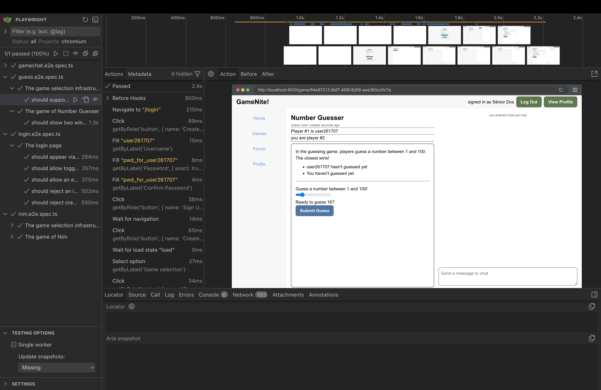
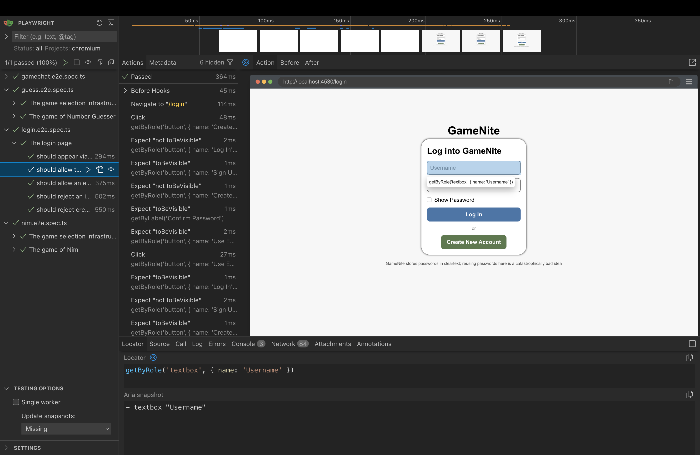

Testing web applications has always been tricky: web applications run inside of the browser, and browsers are complicated pieces of software. Many pieces of software have been created to provide a test double for the browser and the browser’s DOM (Document Object Model). However, the current trend in the mid-2020s is to directly run tests in the browser, and Playwright is a popular tool that facilitates running these tests.
This guide isn’t intended to replace the Playwright docs, it’s just intended to give an extremely brief introduction to how Playwright can be used in this course.
Running Playwright tests
In our course projects, Playwright tests can be run in two ways:
npm run testin theclientdirectory runs the tests automatically (this is called “headless mode” for obscure reasons). When tests finish, Playwright generates an HTML report in aplaywright-reportdirectory.npm run playwrightin theclientdirectory runs the tests in an interactive UI mode.
When Playwright runs, it will check whether you are already running the development Express server (npm run dev -w=server in the root directory or npm run dev in the server directory) and the development Vite frontend server (npm run dev -w=client in the root directory or npm run dev in the client directory). If it’s not, Playwright will start them. But if you are running the Express server yourself, you can see the server responding to Playwright’s actions.
Playwright’s UI is extremely useful. You can use it to help you:
- Write new tests: Watch mode re-runs tests as you edit
- Debugging failures: Step through each action, see the page state at every moment
- Discovering selectors: Use the “Pick locator” tool to find the right selector for any element
UI mode is your best friend when a test fails and you don’t know why. You can see exactly what the page looked like when an assertion failed.
See Playwright UI Mode docs for a full walkthrough.
Example
Here’s an example of using Playwright to log in to the home page.
// From login.e2e.spec.ts - testing successful login
test('should allow an existing user to log in', async ({ page }) => {
// Assemble
await page.goto('/login');
await page.getByLabel('Username').fill("user3");
await page.getByLabel('Password', { exact: true }).fill("pwd3333");
// Act
await page.getByRole('button', { name: 'Log In' }).click();
// Assess
await page.waitForURL('/');
await expect(page.getByText('signed in as Frau Drei')).toBeVisible();
});
This short code demonstrates several types of Playwright actions:
- Navigating to different pages and waiting for URLs to change
- Locating elements on a page (like the field for entering username, or the button for logging in)
- Interacting with elements on a page
- Testing assertions about an element on a page
Locating Elements on a Page
A lot of the challenge of browser UI testing in general is locating elements on a web page. Ideally, tests should interact with web pages the way a human user does—by looking for buttons, clicking on labeled fields, and reading visible text.
This is where accessibility comes in. ARIA (Accessible Rich Internet Applications) is a set of attributes that make web content more accessible to people using assistive technologies like screen readers. The key insight is: if a website is accessible to screen readers, it’s more likely to be accessible to automated tests.
Playwright’s locator methods are designed around this principle:
getByRole()finds elements by their ARIA role (button, link, textbox, etc.)getByLabel()finds form inputs by their associated label text; associating form input fields with a label is a good accessibility practicegetByText()finds elements by their visible text content
This creates a virtuous cycle: writing good Playwright tests pushes you toward building more accessible websites, and accessible websites are easier to test.
Rule of thumb: If a test is hard to write, your first impulse should be to improve the component’s accessibility (add labels, use semantic HTML).
Discovering Selectors
Option 1: Playwright UI mode (recommended)
Run npm run playwright to open the interactive test runner. After running a test, you can click on any action step to see the page state at that moment:

Use the “Pick locator” tool to click on any element. Playwright will suggest the best selector automatically. In this example, clicking on the Username field shows getByRole('textbox', { name: 'Username' }):

Option 2: Browser DevTools
- Right-click an element → Inspect
- Look for
aria-label,role,placeholder, or visible text - Map what you find to the appropriate
getBy*method:
| What you see in HTML | Playwright method |
|---|---|
aria-label="Username" |
getByLabel('Username') |
placeholder="Send a message to chat" |
getByPlaceholder('Send a message to chat') |
role="button" with text “Log In” |
getByRole('button', { name: 'Log In' }) |
role="listitem" |
getByRole('listitem') |
| Visible text “signed in as…” | getByText('signed in as...') |
Implicit ARIA Roles
You don’t need an explicit role attribute in the HTML for getByRole() to work. A <button> element is found by getByRole('button') because of its implicit role, so when you write page.getByRole('button', { name: 'Log In' }), Playwright will find any <button> element with that accessible name. No explicit role attribute is necessary.
Here are some other examples:
| HTML Element | Implicit ARIA Role |
|---|---|
<button> |
button |
<a href="..."> |
link |
<input type="text"> |
textbox |
<input type="checkbox"> |
checkbox |
<h1> through <h6> |
heading |
<ul>, <ol> |
list |
<li> |
listitem |
See MDN’s ARIA roles reference for a complete list, or Playwright’s Locate by role guide for testing-specific examples.
Avoiding CSS or XPATH Selectors
There are other ways of locating objects on a page; online sources or ChatGPT will probably give you code that uses .locator method a lot. Playwright’s docs suggest against this and we do too, as it describes in the docs on .locator .
Filtering and Chaining
When multiple elements match, narrow down with .filter():
// From testutils.ts - find the specific list item containing a username, then click its link
await page2.getByRole('listitem').filter({ hasText: username1 }).getByRole('link').click();
See Playwright Locators docs for more filtering options.
Interacting With Elements on a Page
One of the things that Playwright does quite well is handle interactions with page elements. If an action can’t be taken right away, Playwright will generally wait until the action becomes available. A few cases need explicit waits, and this is one of the trickier parts of Playwright—it works so well most of the time that the exceptions can be surprising.
String Matching and { exact: true }
By default, Playwright’s locators use substring matching. This is usually convenient, but can cause problems when multiple elements contain similar text:
// If the page has both "Password" and "Show Password" labels:
page.getByLabel('Password') // ❌ Might match either element!
// Use exact matching to be precise:
page.getByLabel('Password', { exact: true }) // ✅ Only matches "Password" exactly
Use { exact: true } when:
- A shorter label is a substring of a longer one (like “Password” vs “Confirm Password”)
- You need to distinguish between similar elements
- You want the test to fail if the exact text changes
Auto-Waiting for Actions
Clicking and filling elements will automatically wait for the element to be visible and actionable:
await page.getByLabel('Username').fill('user3');
await page.getByRole('button', { name: 'Log In' }).click();
Sometimes, you need explicit waits.
After navigation or redirects: Actions like clicking a login button trigger a redirect, but the action itself completes immediately. Use waitForURL to explicitly wait for the navigation to finish before continuing.
// From login.e2e.spec.ts
await page.getByRole('button', { name: 'Log In' }).click(); // Click completes, redirect starts
await page.waitForURL('/'); // Explicitly wait for redirect to complete
await expect(page.getByText('signed in as Frau Drei')).toBeVisible();
After WebSocket updates: When another user’s action updates your UI (common in multiplayer games), wait on the resulting UI change:
// Pattern for multiplayer games - after player 1 acts, verify player 2's UI updates
await page1.getByRole('button', { name: 'Take three' }).click();
await expect(page2.getByRole('button', { name: 'Take one' })).toBeEnabled(); // Wait for WebSocket update
When data loads asynchronously: If a component renders after fetching data, wait on the element you need:
// From testutils.ts - wait for the chat input to confirm game page loaded
await page1.getByPlaceholder('Send a message to chat').click();
The rule of thumb is: when auto-wait isn’t enough, use await expect(...) assertions, because these consistently retry until the condition is met or timeout. See Auto-retrying assertions in the Playwright docs for more details.
Assertions
Assertions in Playwright work differently than you might expect from vitest. Instead of checking a condition once and immediately passing or failing, Playwright assertions automatically retry until the condition is met or a timeout is reached.
This is essential for testing dynamic web applications where elements might take time to appear, update, or become interactive. You don’t need to add manual delays or polling—just write what you expect, and Playwright handles the waiting.
// These assertions will retry until they pass (or timeout after ~5 seconds by default)
await expect(element).toBeVisible();
await expect(element).toBeEnabled();
await expect(element).toHaveText('expected');
await expect(element).toBeDisabled();
await expect(element).not.toBeVisible();
See the Playwright Assertions documentation for a complete list of available matchers.
Debugging Failed Tests
Test failures happen. Here’s how to diagnose them efficiently.
1. Read the Error Message
Playwright’s error messages are detailed. Look for:
- Which assertion failed: e.g.,
expect(locator).toBeVisible() - What it was waiting for: e.g.,
Locator: getByRole('button', { name: 'Start Game' }) - Timeout: If it says “Timeout 30000ms exceeded,” the element never appeared
Error: expect(locator).toBeVisible()
Locator: getByRole('button', { name: 'Start Game' })
Expected: visible
Received: <element not found>
Call log:
- waiting for getByRole('button', { name: 'Start Game' })
2. Check the HTML Report
After npm run test fails, Playwright generates a report:
client/playwright-report/index.html
Open it in a browser. The report shows:
- ✅ / ❌ status for each test
- Error details with the full call log
- Source location of the failing line
Note: Screenshots and traces are not captured by default. The current config only generates the basic HTML report. If you need these, you’d enable them in
playwright.config.mjs.
3. Reproduce in UI Mode
Run the failing test in UI mode for interactive debugging:
npm run playwright
In UI mode you can:
- Watch the test run in a real browser
- Pause on any step and inspect the page
- See the DOM state at each action
- Use “Pick locator” to verify your selectors match what you expect
4. Common Failure Patterns
| Symptom | Likely cause | Fix |
|---|---|---|
| “Element not found” | Selector doesn’t match | Use UI mode’s “Pick locator” to find the right selector |
| “Element not visible” | Element exists but hidden/covered | Check if something is overlaying it, or wait for animation |
| Timeout after navigation | Missing waitForURL |
Add await page.waitForURL('/expected-path') |
| Flaky (passes sometimes) | Race condition with async data | Add await expect(...) on the element before interacting |
| Works locally, fails in CI | Server not ready | Check webServer config in playwright.config.mjs |
5. Isolate the Problem
Run just the failing test:
# In UI mode - click on the specific test
npm run playwright
# Or from command line
npx playwright test -g "test name here"
UI mode is the best debugging tool—you can pause on any step, inspect the page, and see exactly what Playwright sees. Prefer this over adding debug code to your tests.
6. Check if It’s a UI Bug
Sometimes the test is correct but the UI has a bug. Before spending hours on the test:
- Run the app manually (
npm run devin bothclient/andserver/) - Try the exact flow your test is doing
- If the UI doesn’t work manually, fix the UI first
References
| Documentation | What It Covers |
|---|---|
| Test intro | Basic test structure, running tests |
| UI Mode | Interactive debugging, watch mode |
| Locators | All getBy* methods, filtering, chaining |
| getByRole reference | Role names, options like { name, exact } |
| Actionability | How auto-wait works, what Playwright checks |
| Assertions | All expect() matchers: toBeVisible, toHaveText, etc. |
GameNite-Specific Tips
Test Utilities
The file client/tests/end-to-end/testutils.ts provides helper functions to reduce boilerplate in tests:
logInUser(page, username, password) - Logs in an existing user and waits for the redirect to complete:
import { logInUser } from './testutils.ts';
await logInUser(page, 'user2', 'pwd2222');
// User is now logged in and on the home page
createAndLoadGame(page1, page2, gameId, gameStartsAutomatically, doAssess) - Sets up a complete two-player game session:
import { createAndLoadGame } from './testutils.ts';
// In beforeEach:
await createAndLoadGame(page1, page2, 'nim', true, false);
// Both players are now in a started game, ready for gameplay tests
Parameters:
page1,page2: Two separate browser pages (from different browser contexts)gameId: The game type ('nim','guess', etc.)gameStartsAutomatically:trueif the game starts when 2 players join (like Nim),falseif a “Start Game” button must be clickeddoAssess:trueadds extra assertions during setup (useful for testing the setup flow itself)
The helper creates a random new user for page1 to avoid test collisions, while page2 uses the seeded user2 account.
Seed Users
The server seeds these test users on startup:
| Username | Password | Display Name |
|---|---|---|
user0 |
pwd0000 |
The Knight Of Games |
user1 |
pwd1111 |
Yāo |
user2 |
pwd2222 |
Sénior Dos |
user3 |
pwd3333 |
Frau Drei |
- Always
waitForURLafter login/navigation. The redirect happens async. - Create random usernames in tests. Avoids collisions:
'user' + Math.floor(Math.random() * 1_000_000)helps avoid “User already exists” when the test creates accounts. - Test display names, not usernames. The UI shows “Frau Drei”, not “user3”.
- WebSocket updates need explicit waits. After one player acts, wait for the other player’s UI to update.
- The server resets on restart (in dev mode). If your test data seems stale, restart the dev server. (Note: This only applies to the default in-memory setup. With MongoDB configured, data persists across restarts.)